Let's begin with the white face. First we have to make a white cross paying attention to the color of
the side center pieces. You can try to do this without reading instruction. Use this stage to familiarize yourself with the puzzle and see how far you can get without
help.
This step is relatively intuitive because there are no solved pieces to watch out for. Just practice and
don't give up easily. Try move the white edges to their places not messing up the ones already fixed.
You can get a little help about forming a white cross, with animated algorithms here.
Example of a good white cross
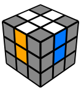
2. White corners
In this step we have to arrange the white corner pieces to finish the first face.
If you are very persistent and you managed to do the white cross without help then you can try to do
this one as well.
If you don't have patience I'll give you some clue.
Twist the bottom layer so that one of the white corners is directly under the spot where it's supposed to
go on the top layer.
Now, do one of the three algorithms according to the orientation of the piece, aka. in which direction
the white sticker is facing.
If the white corner piece is where it belongs but turned wrong then first you have to pop it out.
The algorithms
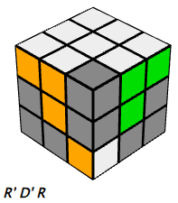
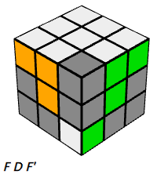
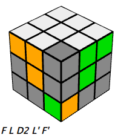
Completed white face
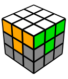
Alternate method
The video shows an alternate method where you will use the same R U R' U' algorithm to
solve individual corner pieces.
3. Second layer
Until this point the procedure was pretty straight forward but from now on we have to use algorithms.
We can forget the completed white face so let's turn the cube upside down to focus on the unsolved side.
In this step we are completing the first two layers (F2L). There are two symmetric algorithms we have to
use in this step.
They're called the Right and Left algorithms.
These algorithms insert the Up-Front edge piece from the top layer to the middle layer while not messing
up the solved white face.
If none of the pieces in the top layer are already lined up like in the images below, then turn the top
layer until one of the edge pieces in the top layer matches one of the images below.
Then follow the matching algorithm for that orientation.
The algorithms
The left side algorithm is used when the center top edge on the front face is matched to
the center colour of the front face, but the top side of the center top edge is the same colour as the
center colour of the left face.
The algorithm is U' L' U L U F U' F'.
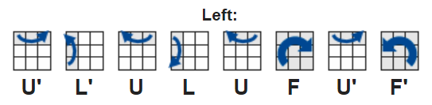
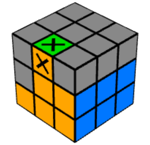
The right side algorithm is used when the center top edge on the front face is matched
to the center colour of the front face, but the top side of the center top edge is the same colour as
the center colour of the right face.
The algorithm is U R U' R' U' F' U F.
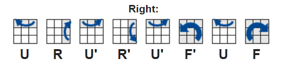
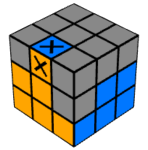
Solved second layer
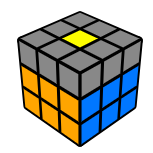
Video demonstration of a sligtly alternate method
4. Yellow Cross
Start solving the last layer making a yellow cross on the top of the cube.
It doesn't matter if the pieces are not on their final places so we don't have to pay attention to the
colors of the sides.
The algorithm
We can get three possible patterns on the top. Use this algorithm to go from one state to the other.
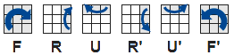
When you see a dot you have to apply the algorithm three times. If you have a yellow "L" shape then
onlye twice,
holding the cube in your hands as seen on the image below.
In case of a horizontal line you just have to execute the permutation once.
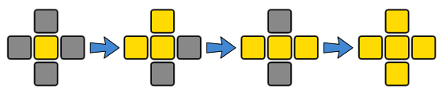
5. Yellow edges
After making the yellow cross on the top of the cube you have to put the yellow edge pieces
on their final places to match the colors of the side center pieces.
The algorithm
Use the following algorithm to switch the front and left yellow edges.
You might face a situation when you have to apply this algorithm more than once.
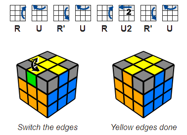
6. Yellow corners in their place
Only the last layer corners are left unsolved. First we have to get them to the right spot,
so don't worry about the orientation in this step.
The algorithm
Find a piece which is already on the right place,
move it to the right-front-top corner then apply the following algorithm to switch or potentially cycle,
the three wrong pieces marked on the image.
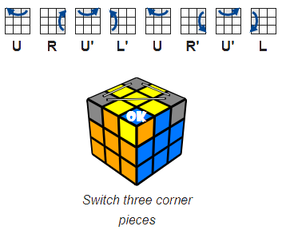
7. Correct yellow corner
Its almost SOLVED!!!
All pieces are on their right places you just have to orient the yellow corners to finish the puzzle.
This proved to be the most confusing step so read the instructions and follow the steps carefully.
The algorithm
Hold the cube in your hand with an unsolved corner on the front-right-top corner,
then do the algorithm below twice or four times until that specific piece is oriented well
It will look like you've messed up the whole cube but don't worry, it will be all right when all the
corner pieces are oriented.
Turn the top layer only to move another unsolved yellow piece to the front-right-top corner of the cube
and
do the same R' D' R D again until this specific piece is ok. Be careful not to move the two
bottom layers between
the algorithms and never rotate the whole cube!